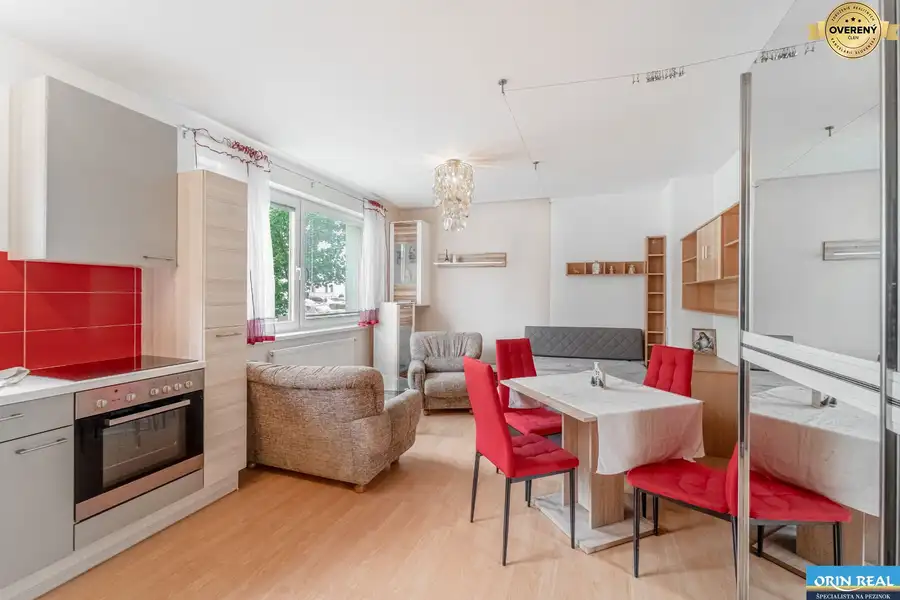
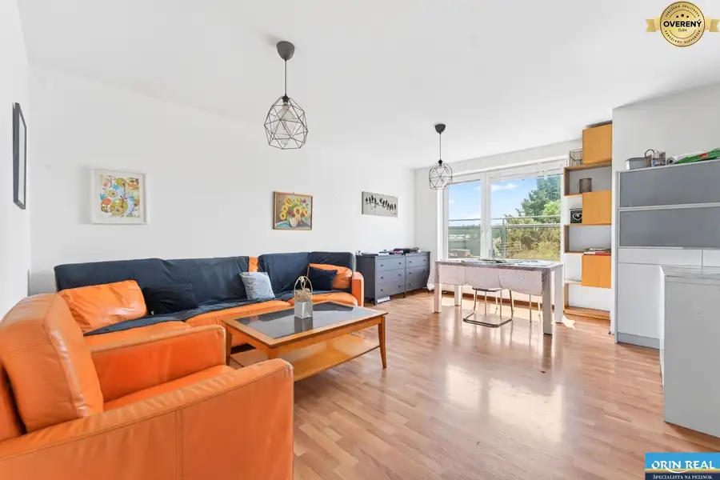
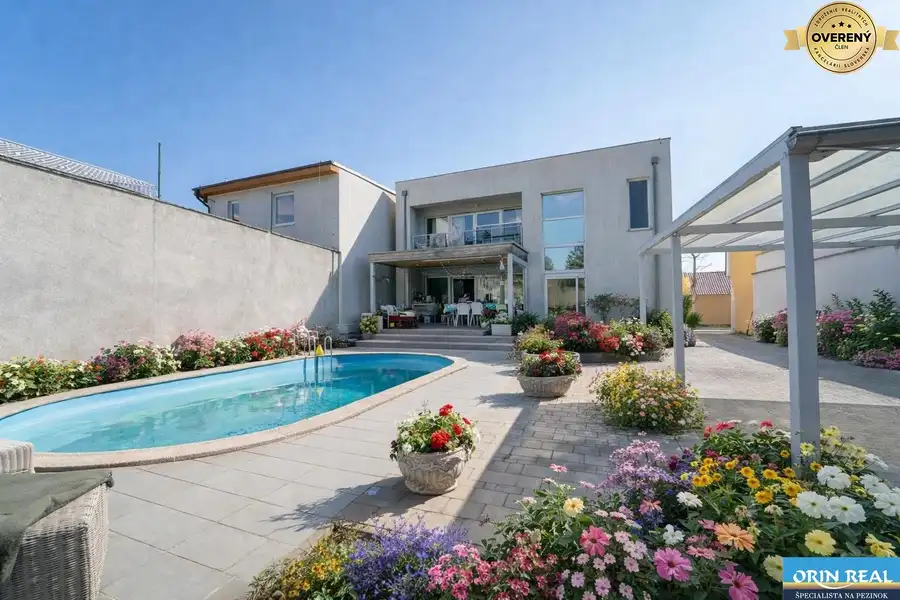

Pripravujeme- výnimočný 6-izbový RD v prostredí viníc
Modra
- Dispozícia6-izbový
- Plocha366 m²
- Poschodie0. z 2
- Stavpôvodný
- Vlastníctvoosobné
O nehnuteľnosti
LICENCOVANÁ RK ORINREAL ponúka na predaj kvalitne a moderne postavený samostatne stojaci rodinný dom z roku 2017 v tichej časti Modry – pri uliciach Kalinčiakova a Za štadiónom, v príjemnom prostredí pod Malými Karpatmi a v blízkosti viníc. Dom zaujme veľkorysou dispozíciou, premysleným riešením – ideálny je pre väčšiu rodinu aj ako dvojgeneračné bývanie. Vďaka samostatnému spodnému podlažiu s vlastnou kuchyňou ponúka výnimočnú flexibilitu pre viacgeneračné spolužitie.
PARAMETRE NEHNUTEĽNOSTI
Typ nehnuteľnosti: samostatne stojaci rodinný dom
Počet izieb: 6 (4 na prízemí + 2 priestranné izby na spodnom podlaží)
Pozemok: 835 m²
Zastavaná plocha: cca 188 m²
Úžitková plocha: cca 366 m²
Postavený: 2017
Stav: (bez zariadenia)
DISPOZÍCIA
Prízemie (1.NP): Centrálnym priestorom je priestranná obytná zóna, kde sa kuchyňa a obývacia časť s krbom plynule prelínajú a vychádzajú priamo na terasu. Na tomto podlaží sa nachádzajú 4 izby, 2 kúpeľne a samostatné WC.
Spodné podlažie (1.PP): Samostatné podlažie s 2 veľkými izbami, vlastnou kuchyňou a toaletou (s možnosťou dobudovať kúpeľňu) – ideálne pre dvojgeneračné bývanie alebo prenájom. Pripravená je tu aj ventilácia pre výrivku.
Povala: Úložný priestor na povale.
ŠTANDARD A TECHNICKÉ VYBAVENIE
* Murovaná konštrukcia - DTS tvárnice a tehla
* Ústredné vykurovanie s vlastným zdrojom + podlahové kúrenie
* Elektrický kotol / bojler
* Klimatizácia
* Kvalitné parketové podlahy
* Plastové okná
* Bezpečnostné dvere a alarm
* Sieťky proti hmyzu na oknách
Kamerový systém
GARÁŽ A PARKOVANIE
* Vstavaná garáž pre 2 vozidlá + prístrešok na 2 vozidlá
* Garážová elektrická brána s diaľkovým ovládaním
ZÁHRADA A EXTERIÉR
Súčasťou nehnuteľnosti je oplotená záhrada, okrasné jazierko a terasa s pekným výhľadom.
INŽINIERSKE SIETE
Elektrina, vlastná studňa, domová čistička odpadových vôd (ČOV).
LOKALITA A OKOLIE
Modra patrí medzi obľúbené mestá pod Malými Karpatmi, známe vinárskou tradíciou, prírodou a pokojným bývaním mimo ruchu veľkomesta. Časť pri Kalinčiakovej a Za štadiónom je tichá a vyhľadávaná, s dobrou dostupnosťou centra mesta. Občianska vybavenosť v dosahu:
* Školy a škôlky
* Obchody a služby v centre Modry
* Vinice, lesy a cyklotrasy Malých Karpát priamo za domom
* Priame spojenie do Pezinka aj do Bratislavy
CENA: 539 900€
Fotografie nehnuteľnosti poskytneme na vyžiadanie. Pre viac informácií alebo dohodnutie obhliadky ma neváhajte kontaktovať.
TEL:
www.lenkakravarcikova.sk
Parametre
| Rozloha pozemku | 835 m² |
|---|---|
| Zastavaná plocha | 188 m² |
| Úžitková plocha | 366 m² |
| Poschodie | prízemie |
| Počet poschodí | 2 |
| Počet izieb | 6 |
| Vlastníctvo | osobné |
| Stav | pôvodný |
| Voda | studňa |
| El. napätie | 230/400V |
| Plyn | nie |
| Kanalizácia | ČOV |
| Kúpeľňa | áno |
| Vykurovanie | vlastné - elektrické |
| Balkón | áno |
| Lódžia | nie |
| Terasa | áno |
| Pivnica | nie |
| Garáž | áno - 2 autá |
| Parkovanie | vnútorné |
| Inžinierske siete | áno |
| Postavené z | tehla |
| Zariadenie | čiastočne |
| Zateplený objekt | áno |
| Strecha | pôvodná |
| Krb | áno |
| Klimatizácia | áno |
| Predzáhradka | áno |
| Okná | plastové |
| Terén | svahovitý |
| Prístupová cesta | neupravená cesta |
| Novostavba | áno |
| Dátum zverejnenia | 18. 9. 2026 |
Kde to je
Mohlo by Vás zaujímať

Byt10 135 000 €Bezbariérový 1-izbový byt v obľúbenej lokalite Muškát Pezinok 1-izbový30 m² Licencovaná realitná kancelária ORIN REAL ponúka na predaj príjemný, kompletne zariadený 1-izbový byt vo vyhľadávanej lokalite Pezinka, na sídlisku…
Byt10 239 990 €Atraktívna nadstavba 3. izb. bytu v centre mesta Pezinok 3-izbový67.37 m²5. podlažie Licencovaná realitná kancelária ORIN REAL ponúka na predaj priestranný a svetlý 3-izbový byt vo vyhľadávanej lokalite Pezinok – Moyzesova ulica. Táto…
Rodinné domy10 739 000 €Rodinný dom s bazénom a saunou takmer v centre Pezinka Pezinok 4-izbový300 m² Licencovaná realitná kancelária ORIN REAL Vám exkluzívne ponúka na predaj výnimočnú rodinnú vilu s bazénom vo vyhľadávanej lokalite Pezinok –…